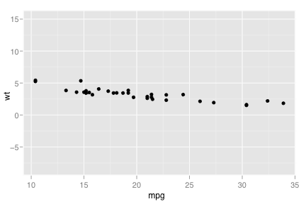
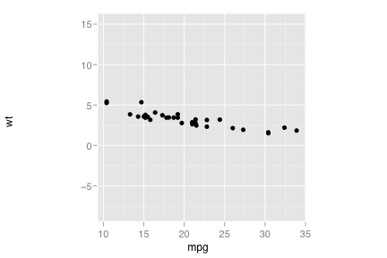
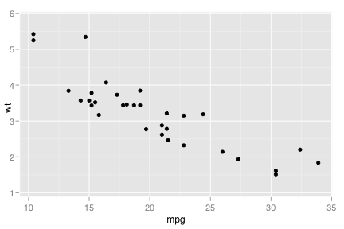
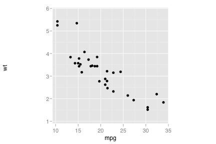

coord_equal
Equal scale cartesian coordinates
Details
An equal scale coordinate system plays a similar role to ?eqscplot in MASS, but it works for all types of graphics, not just scatterplots.
This coordinate system has one parameter, ratio, which specifies the ratio between the x and y scales. You will usually need to set the aspect ratio as well - see the example for details.
See layer and qplot for more information on creating a complete plot from multiple components.
Examples
> (p <- qplot(mpg, wt, data=mtcars) + coord_equal(ratio=1))  > p$aspect.ratio <- 1;p  > > (p <- qplot(mpg, wt, data=mtcars) + coord_equal(ratio=1/5))  > p$aspect.ratio <- 1;p  > p$aspect.ratio <- 1/5;p> > # Resize the plot, and observe that the specified aspect ratio is > # mantained